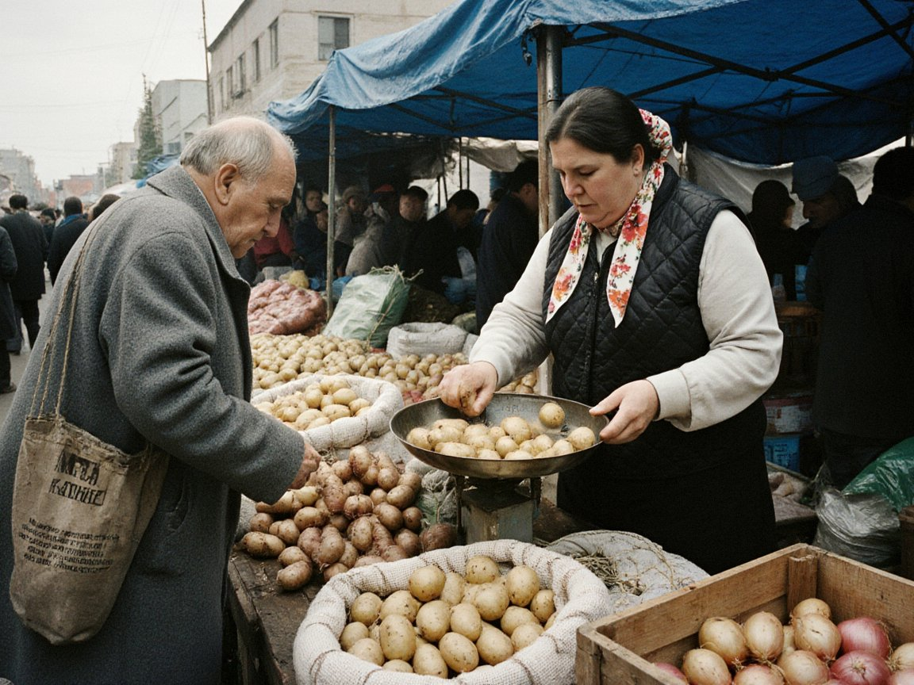
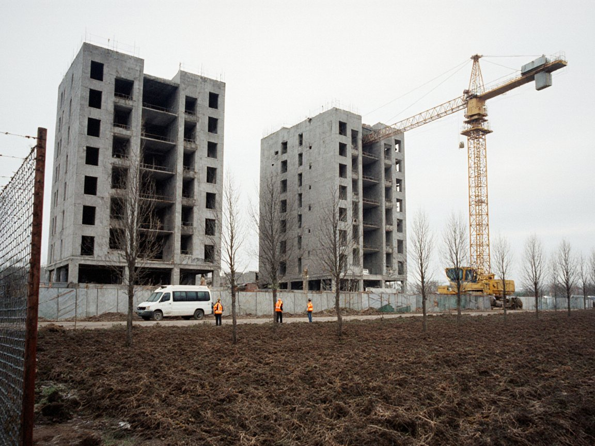

Главное за неделю
Электричество зимой: соседи договариваются, Токтогул работает по графику
Министры энергетики Кыргызстана и Узбекистана на этой неделе обсудили поставки электроэнергии. Ирад в переговорах не участвует, но оба соседа покупают токтогульскую энергию.
Беспилотные фуры на казахстанско-китайской границе: что это значит для «Чу-Гейта»
Казахстан и Китай планируют испытать беспилотные грузовики на трансграничных маршрутах. Ирад в проекте не участвует, и ни один из объявленных маршрутов не проходит по территории ИСЭЗ.

ОфициальноПашню под застройку — остановить: позиция вице-губернатора
На встрече с жителями Кызыл-Адыра вице-губернатор Айдар Максат заявил, что перевод орошаемой пашни в Кара-Бууринской и Таласской долинах под участки для жилья нужно прекратить. Никаких новых правил при этом не вводилось.
 Спорт
СпортДерби решит всё: «Нефтчи» нужна только победа
В субботу на стадионе «НурГаз» «Нефтчи» принимает «Тулпар» в последнем туре чемпионата. Талассцам хватит ничьей.
 Экология
ЭкологияОсенний смог: синоптики объясняют, почему воздух стоит
Холодный спокойный воздух над Чуйской равниной создаёт инверсии, и дым держится у земли как раз тогда, когда начинается отопительный сезон.
Работа в России: о чём помнить семьям
Украинский проект насчитал более 20 400 жителей Центральной Азии, подписавших контракты с российской армией. Ирадцев в этой статистике нет, но вопрос документов касается и нас.

ГородЧетыре новых жилых комплекса: 1 520 квартир для Нуржана
Нуржан строит больше всех: из девяти жилых комплексов ИСЭЗ четыре — у нас. Сдать дома обещают в 2027–2028 годах.
Урожай больше, доход скромнее: сельское хозяйство за девять месяцев
Министерство экономики оценивает сельхозпроизводство за январь–сентябрь в 6,1 млрд сомов. Объём вырос на 12%, стоимость — лишь на 6%.